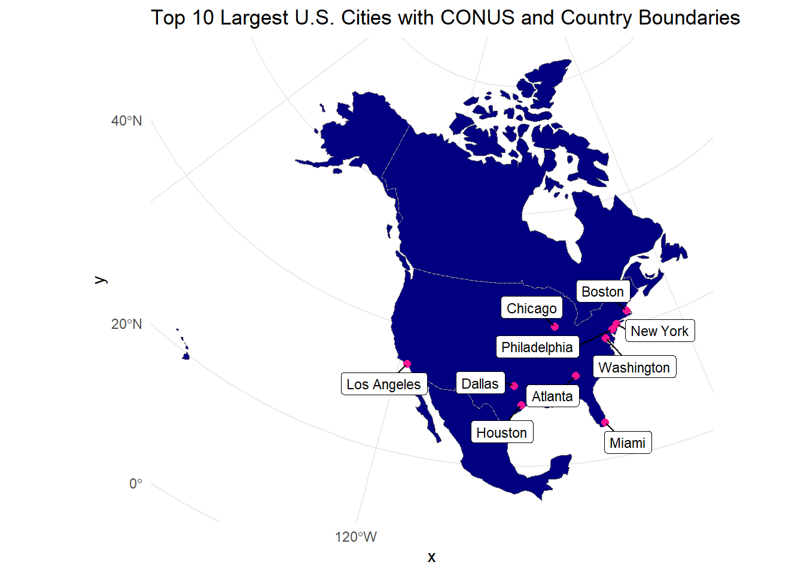
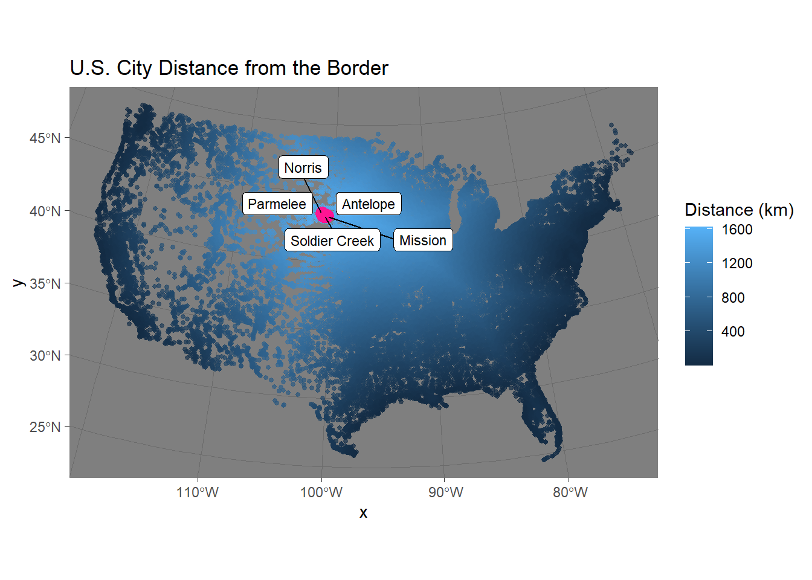
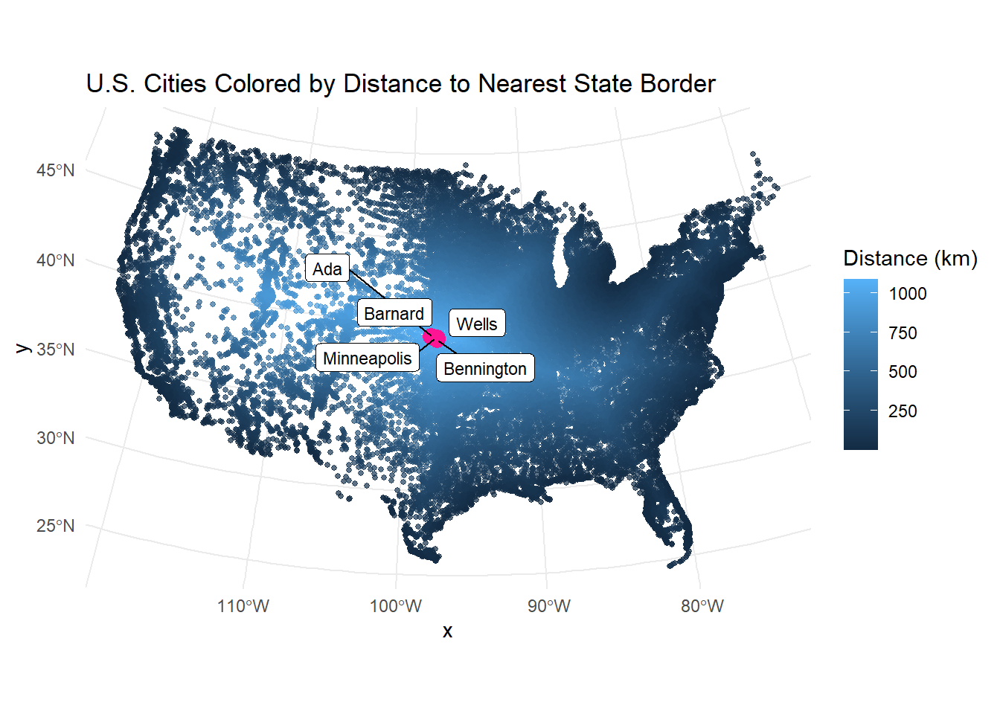
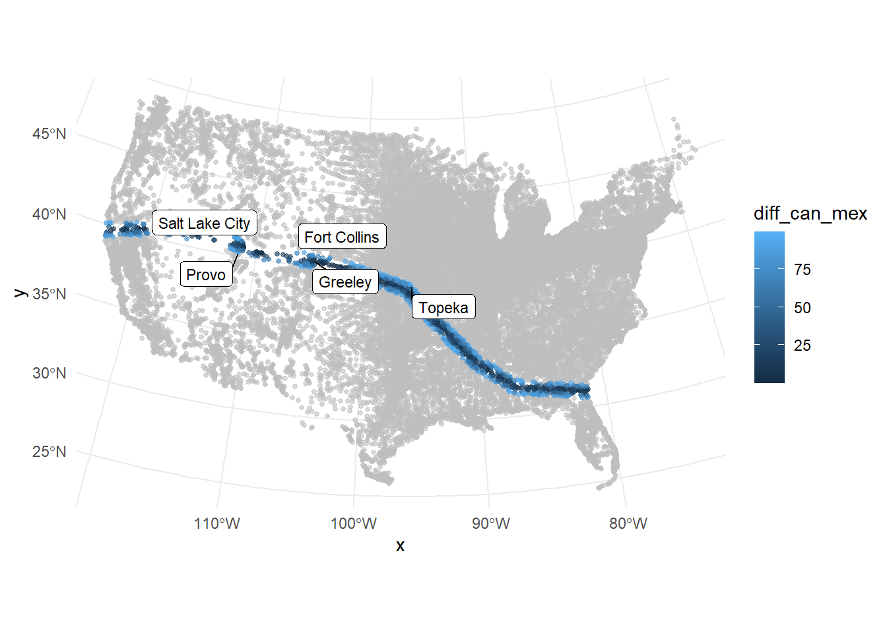
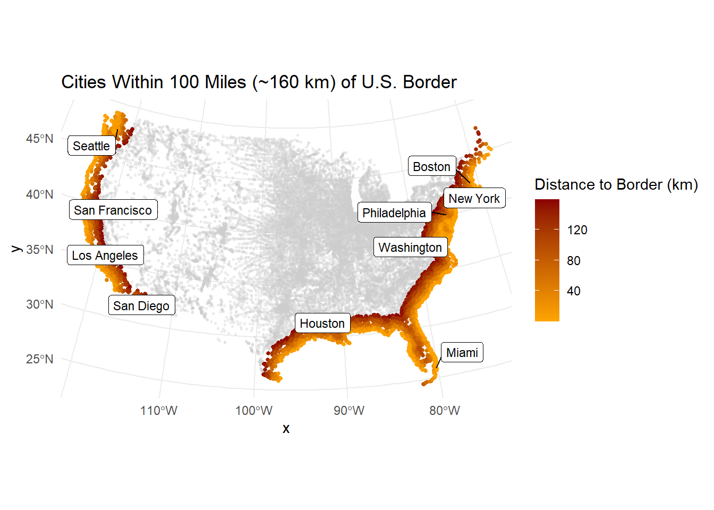

Warning: package 'remotes' was built under R version 4.4.3
remotes::install_github("ropensci/USAboundaries")
Using GitHub PAT from the git credential store.
Skipping install of 'USAboundaries' from a github remote, the SHA1 (0f56f492) has not changed since last install.
Use `force = TRUE` to force installation
Skipping install of 'USAboundariesData' from a github remote, the SHA1 (064cdbcb) has not changed since last install.
Use `force = TRUE` to force installation
Skipping install of 'rnaturalearthdata' from a github remote, the SHA1 (ff4d891f) has not changed since last install.
Use `force = TRUE` to force installation
# spatial data sciencelibrary(tidyverse)
Warning: package 'tidyverse' was built under R version 4.4.3
Warning: package 'purrr' was built under R version 4.4.3
── Attaching core tidyverse packages ──────────────────────── tidyverse 2.0.0 ──
✔ dplyr 1.1.4 ✔ readr 2.1.5
✔ forcats 1.0.0 ✔ stringr 1.5.1
✔ ggplot2 3.5.1 ✔ tibble 3.2.1
✔ lubridate 1.9.4 ✔ tidyr 1.3.1
✔ purrr 1.0.4
── Conflicts ────────────────────────────────────────── tidyverse_conflicts() ──
✖ dplyr::filter() masks stats::filter()
✖ dplyr::lag() masks stats::lag()
ℹ Use the conflicted package (<http://conflicted.r-lib.org/>) to force all conflicts to become errors
library(sf)
Warning: package 'sf' was built under R version 4.4.3
Linking to GEOS 3.13.0, GDAL 3.10.1, PROJ 9.5.1; sf_use_s2() is TRUE
library(units)
Warning: package 'units' was built under R version 4.4.3
udunits database from C:/Users/lance/AppData/Local/R/win-library/4.4/units/share/udunits/udunits2.xml
#1.2 - Get USA state boundariesremotes::install_github("mikejohnson51/AOI")
Using GitHub PAT from the git credential store.
Skipping install of 'AOI' from a github remote, the SHA1 (f821d499) has not changed since last install.
Use `force = TRUE` to force installation
#1.3 - Get country boundaries for Mexico, the United States of America, and Canadaboundaries <-aoi_get(country =c("MX", "CA", "USA"))#Make sure the data is in a projected coordinate system suitable for distance measurements at the national scale (eqdc).eqdc_cord <-st_transform(boundaries, crs = eqdc)
#1.4 - Get city locations from the CSV file#Once downloaded, read it into your working session using readr::read_csv() and explore the dataset until you are comfortable with the information it contains.uscities <-read_csv("data/uscities.csv")
Rows: 31254 Columns: 17
── Column specification ────────────────────────────────────────────────────────
Delimiter: ","
chr (9): city, city_ascii, state_id, state_name, county_fips, county_name, s...
dbl (6): lat, lng, population, density, ranking, id
lgl (2): military, incorporated
ℹ Use `spec()` to retrieve the full column specification for this data.
ℹ Specify the column types or set `show_col_types = FALSE` to quiet this message.
This confirms the accuracy of the dataset and that it contains information necessary for transformation to a spatial analysis.
#remove hawaii alaska puerto rico, from the USA boundaris_statesuscities_above40 <- uscities%>%filter(!state_id %in%c("HI", "AK", "PR"))
#While this data has everything we want, it is not yet spatial. Convert the data.frame to a spatial object using st_as_sfuscities_sf <-st_as_sf(uscities_above40, coords =c("lng", "lat"), crs =4326)
#2.1 - Distance to USA Border (coastline or national) (km)#Convert the USA state boundaries to a MULTILINESTRING geometry in which the state boundaries are resolved.usa_border_resolved <-st_union(eqdc_cord) |>st_cast("MULTILINESTRING")# Store this distance data as part of the cities data.frameuscities_proj$dist_to_border_km <-as.numeric(set_units(st_distance(uscities_proj, usa_border_resolved),"km" ))# Produce a table (flextable) of 5 cities farthest from national borderlibrary(flextable)
Attaching package: 'flextable'
The following object is masked from 'package:purrr':
compose
This flextable shows the five U.S. cities farthest from any national (coastline or international) border are all located in South Dakota, with distances exceeding 1,600 km.
#2.2 - Distance to States (km)#onvert the USA state boundaries to a MULTILINESTRING geometry in which the state boundaries are preserved (not resolved).usa_states <- boundaries %>%filter(admin =="United States of America") %>%st_transform(crs = eqdc)usa_state_borders <-st_cast(usa_states, "MULTILINESTRING")uscities_proj$dist_to_state_km <-as.numeric(set_units(st_distance(uscities_proj, usa_state_borders),"km" ))#produce a table (flextable) documenting the five cities farthest from a state border. Include only the city name, state, and distance.uscities_proj %>%st_drop_geometry() %>%select(city, state_name, dist_to_state_km) %>%arrange(desc(dist_to_state_km)) %>%slice(1:5) %>%flextable()
city
state_name
dist_to_state_km
Minneapolis
Kansas
1,090.628
Barnard
Kansas
1,089.957
Ada
Kansas
1,089.876
Wells
Kansas
1,086.474
Bennington
Kansas
1,083.891
This table shows the cities farthest from state borders. Interestingly, the cities listed are in Kansas.
#2.3 - Distance to Mexico (km)#isolate Mexico from the country objectsmexico <- boundaries %>%filter(iso_a2 =="MX") %>%st_transform(crs = eqdc)mexico_border <-st_cast(mexico, "MULTILINESTRING")uscities_proj$dist_to_mexico_km <-as.numeric(set_units(st_distance(uscities_proj, mexico_border),"km" ))#produce a table (flextable) documenting the five cities farthest from a state border. Include only the city name, state, and distance.uscities_proj %>%st_drop_geometry() %>%select(city, state_name, dist_to_mexico_km) %>%arrange(desc(dist_to_mexico_km)) %>%slice(1:5) %>%flextable()
city
state_name
dist_to_mexico_km
Grand Isle
Maine
3,282.825
Caribou
Maine
3,250.330
Presque Isle
Maine
3,234.570
Oakfield
Maine
3,175.577
Island Falls
Maine
3,162.285
This table displays the cities in the U.S. farthest from the Mexican border, with all top results located in Maine. This makes sense geographically, as northern Maine is about as far from the southern border as one can get within the continental U.S.
#2.4 - Distance to Canada (km)#isolate Canida from the country objectscanada <- boundaries %>%filter(iso_a2 =="CA") %>%st_transform(crs = eqdc)canada_border <-st_cast(canada, "MULTILINESTRING")uscities_proj$dist_to_canada_km <-as.numeric(set_units(st_distance(uscities_proj, canada_border),"km" ))#produce a table (flextable) documenting the five cities farthest from a state border. Include only the city name, state, and distance.uscities_proj %>%st_drop_geometry() %>%select(city, state_name, dist_to_canada_km) %>%arrange(desc(dist_to_canada_km)) %>%slice(1:5) %>%flextable()
city
state_name
dist_to_canada_km
Guadalupe Guerra
Texas
2,206.455
Sandoval
Texas
2,205.641
Fronton
Texas
2,204.794
Fronton Ranchettes
Texas
2,202.118
Evergreen
Texas
2,202.020
Here, cities in southern Texas are shown to be the farthest from the Canadian border, with distances around 2,200 km.
#3.1 DataShow the 3 continents, CONUS outline, state boundaries, conus_states <- usa_states %>%filter(!postal %in%c("AK", "HI", "PR"))conus_outline <-st_union(conus_states)#and 10 largest USA cities (by population) on a single maptop10_cities <- uscities_proj %>%arrange(desc(population)) %>%slice(1:10)# Plot everythingggplot() +geom_sf(data = eqdc_cord, fill ="navy", lty ="solid") +geom_sf(data = conus_outline, fill =NA, color ="tan", size =1, lty ="dashed") +geom_sf(data = conus_states, fill =NA, color ="grey", size =0.3, lty ="dotted") +geom_sf(data = top10_cities, color ="deeppink", size =2) +geom_label_repel(data = top10_cities,aes(label = city, geometry = geometry),stat ="sf_coordinates",min.segment.length =0,size =3,box.padding =0.3,label.size =0.2,seed =123 ) +labs(title ="Top 10 Largest U.S. Cities with CONUS and Country Boundaries") +theme_minimal()

This map displays the contiguous United States, Canada, and Mexico boundaries, with an overlay of the top 10 most populous U.S. cities. Most of the cities are either on the boarder and either on one of the great lakes or the ocean,
#3.2 City Distance from the Border#Create a map that colors USA cities by their distance from the national border. In addition, re-draw and label the 5 cities that are farthest from the border.# cities farthest from the national borderfarthest_cities <- uscities_proj %>%arrange(desc(dist_to_border_km)) %>%slice(1:5)#plotggplot() +geom_sf(data = uscities_proj, aes(color = dist_to_border_km), size =1, alpha =0.7) +geom_sf(data = farthest_cities, color ="deeppink", fill ="deeppink", shape =21, size =3, stroke =1) +#lablesgeom_label_repel(data = farthest_cities,aes(label = city, geometry = geometry),stat ="sf_coordinates",size =3,box.padding =0.3,label.size =0.2,seed =42) +# map themelabs(title ="U.S. City Distance from the Border",color ="Distance (km)" ) +theme_dark()

All of these are in South Dakota,far from both coastlines and international borders.
#3.3 City Distance from Nearest State#Create a map that colors USA cities by their distance from the nearest state border. In addition, re-draw and label the 5 cities that are farthest from any border.#5 cities farthest from any state borderfarthest_state_cities <- uscities_proj %>%arrange(desc(dist_to_state_km)) %>%slice(1:5)# Step 2: Create the mapggplot() +# Base layer: all cities colored by distance to nearest state bordergeom_sf(data = uscities_proj, aes(color = dist_to_state_km), size =1, alpha =0.7) +# Highlight the 5 farthest cities with shape = 21 (circle with border)geom_sf(data = farthest_state_cities, color ="deeppink", fill ="deeppink", shape =21, size =3, stroke =1) +# Label the farthest citiesgeom_label_repel(data = farthest_state_cities,aes(label = city, geometry = geometry),stat ="sf_coordinates",size =3,box.padding =0.3,label.size =0.2,seed =123) +# Legend and titlelabs(title ="U.S. Cities Colored by Distance to Nearest State Border",color ="Distance (km)" ) +theme_minimal()

All of these seem to be in the same very large state. This one is very surprising to me considering it isn’t in a larger state like Texas.
#3.4 Equidistance boundary from Mexico and Canada#Here we provide a little more challenge. Use gghighlight to identify the cities that are equal distance from the Canadian AND Mexican border 100 km.uscities_proj <- uscities_proj %>%mutate(diff_can_mex =abs(dist_to_canada_km - dist_to_mexico_km))equidistant_cities <- uscities_proj %>%filter(diff_can_mex <=100)top5_equidistant <- equidistant_cities %>%arrange(desc(population)) %>%slice(1:5)ggplot(uscities_proj) +geom_sf(aes(color = diff_can_mex), size =1, alpha =0.6) +gghighlight(diff_can_mex <=100, label_key = city) +#In addition, label the five (5) most populous cites in this zone.geom_label_repel(data = top5_equidistant,aes(label = city, geometry = geometry),stat ="sf_coordinates",size =3,box.padding =0.3,label.size =0.2,seed =42) +theme_minimal()

These cities fall roughly along a central horizontal band across the U.S. This makes sense because they lie equally far from the northern and southern international borders. Fort Collins is in this zone which is interesting to find
#4.1 Quantifing Border Zone#How many cities are in this 100 mile zone? (100 miles ~ 160 kilometers)uscities_proj <- uscities_proj %>%mutate(border_zone = dist_to_border_km <=160)num_cities_in_zone <- uscities_proj %>%filter(border_zone) %>%nrow()#How many people live in a city within 100 miles of the border?pop_in_zone <- uscities_proj %>%filter(border_zone) %>%summarise(pop_border_zone =sum(population, na.rm =TRUE)) %>%pull(pop_border_zone)total_pop <- uscities_proj %>%summarise(total_pop =sum(population, na.rm =TRUE)) %>%pull(total_pop)#What percentage of the total population is in this zone?percent_in_zone <-round((pop_in_zone / total_pop) *100, 2)#Does it match the ACLU estimate in the link above?aclu_estimate <-66match_aclu <-ifelse(abs(percent_in_zone - aclu_estimate) <=2, "Yes", "No")
#Report this information as a table.tibble(`Number of Cities in Border Zone`= num_cities_in_zone,`Population in Border Zone`= pop_in_zone,`Total Population`= total_pop,`Percent of Population in Zone (%)`= percent_in_zone,`ACLU Estimate (%)`= aclu_estimate,`Matches ACLU Estimate?`= match_aclu) %>%flextable() %>%autofit()
Number of Cities in Border Zone
Population in Border Zone
Total Population
Percent of Population in Zone (%)
ACLU Estimate (%)
Matches ACLU Estimate?
8,196
205,635,986
396,228,558
51.9
66
No
This analysis shows that over 8,000 U.S. cities are within 100 miles of a national border, home to around 206 million people—or about 52% of the total population. That’s a bit lower than the ACLU’s estimate of 66%, likely because their number includes all people while ours focused just on cities. A huge part of the U.S. population lives in this zone, which highlights how many people are affected by border-related rules and policies.
#4.2 Mapping Border Zone#Make a map highlighting the cites within the 100 mile zone using gghighlight.danger_zone_cities <- uscities_proj %>%filter(dist_to_border_km <=160) #(100 miles ~ 160 kilometers)top10_danger_zone <- danger_zone_cities %>%arrange(desc(population)) %>%slice(1:10)#Use a color gradient from ‘orange’ to ‘darkred’. Label the 10 most populous cities in the Danger Zoneggplot() +geom_sf(data = uscities_proj, color ="grey80", size =0.5, alpha =0.3) +geom_sf(data = danger_zone_cities, aes(color = dist_to_border_km), size =1) +scale_color_gradient(low ="orange", high ="darkred") +geom_label_repel(data = top10_danger_zone,aes(label = city, geometry = geometry),stat ="sf_coordinates",size =3,box.padding =0.3,label.size =0.2,seed =123) +labs(title ="Cities Within 100 Miles (~160 km) of U.S. Border",color ="Distance to Border (km)" ) +theme_minimal()

eattle, San Francisco, San Diego, Los Angeles,Houston, Boston, New York, Philadelphia, Washington, Miami, are the largest cities most closely located to the coastlines.